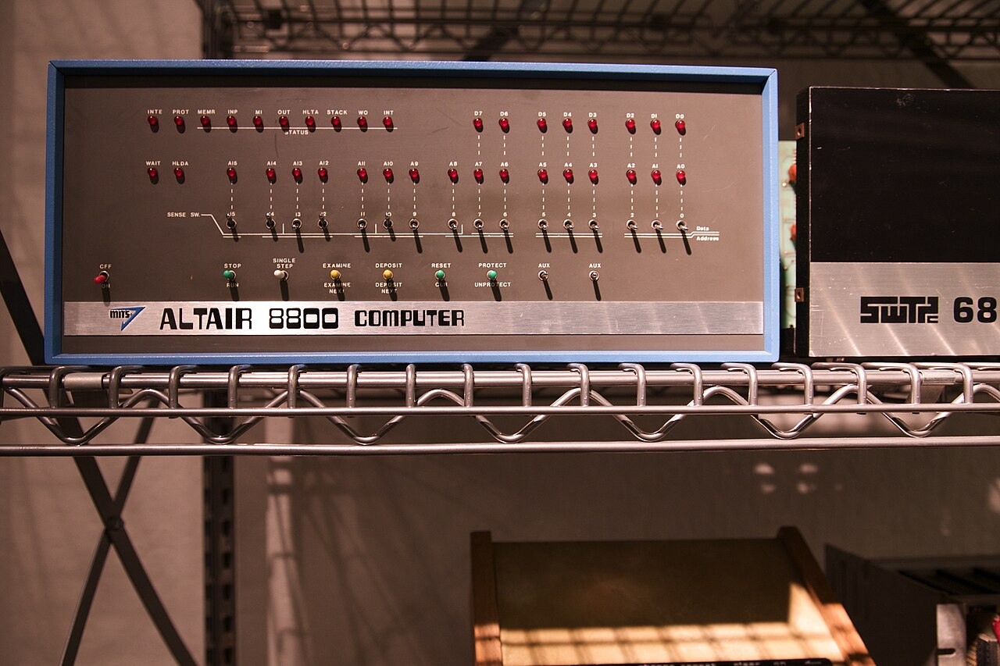

CS-HS-1: Evaluate the impact of computing technology on history and society. Analyze the development and evolution of computing devices and their role in social, economic, and political change.
SSUSH22: Analyze U.S. economic and social developments since 1945. (d. Examine the impact of technological innovation on the American economy, specifically the role of personal computers).
Before the GUI or even the command line, there were switches. Students will simulate the programming process of an Altair 8800 by converting simple instructions into binary codes and "toggling" them using a paper-based or digital representation of the Altair front panel.
Task: Program the machine to add two numbers (e.g., 2+3) by inputting the machine code for the Intel 8080 processor. This highlights the painstaking nature of early computer hobbyism.
Using primary source documents (including the January 1975 issue of Popular Electronics), students will analyze the marketing and media strategy used to launch the Altair. Discussion will focus on why a "dummy" machine on a magazine cover was enough to spark thousands of orders.
In the winter of 1974, the world of computing was a cold, centralized place. Computers were behemoths—chilled, windowless rooms filled with magnetic tape reels and punch-card readers, guarded by "high priests" in white lab coats. For the average person, a computer was something you interacted with via a utility bill or a bank statement, never something you could touch, let alone own. Then came the Altair 8800.
Developed in Albuquerque, New Mexico, by Ed Roberts and his small company, MITS (Micro Instrumentation and Telemetry Systems), the Altair was born out of financial desperation. MITS, originally a manufacturer of calculator kits, was on the verge of bankruptcy due to a brutal price war in the calculator market. Roberts gambled everything on the new Intel 8080 microprocessor. He envisioned a machine that could do what the big mainframes did, but at a price a hobbyist could afford. That price was $397—a staggering achievement for the time.
The Altair didn't look like a computer to the modern eye. It had no keyboard. It had no monitor. It was a blue metal box with a front panel covered in rows of silver toggle switches and flickering red LEDs. To use it, you had to flip those switches to enter machine code bit-by-bit. If you made a single mistake in a sequence of hundreds of flips, the program would crash, and you would have to start over. And because the base model had no persistent memory, turning off the power meant losing everything you had typed.

The Altair's success was cemented by the January 1975 issue of Popular Electronics. The cover featured a photo of the Altair with the headline "World's First Minicomputer Kit to Rival Commercial Models." Legend has it that the original prototype was lost by REA Express during shipping to the magazine's New York offices. Ed Roberts, in a panic, built a "dummy" box with switches but no internal circuitry just for the photo shoot. That empty box ignited a firestorm.
MITS expected to sell maybe 200 units. Instead, they were inundated with orders for thousands in the first few weeks. The "personal" computer had arrived. Among those who saw the cover were two young enthusiasts named Bill Gates and Paul Allen. They realized that if people were buying the hardware, they would soon need software. They contacted Roberts, claiming they had a version of the BASIC programming language ready for the Altair. In reality, they hadn't even started. They spent the next eight weeks working day and night in a Harvard dorm room to create what would become "Altair BASIC," the first product of a new company they called Micro-Soft.
Beyond the hardware itself, the Altair introduced the S-100 bus (originally the "Altair bus"). This was a standardized set of 100 pins that allowed third-party companies to build expansion cards for memory, video, and interfaces. This created the first true "ecosystem" in computing. It allowed the Altair to grow from a hobbyist's toy into a functional business machine capable of word processing and accounting. It also paved the way for the IMSAI 8080 and other "clones," establishing the modular architecture that still influences PC design today.
"The day we saw that magazine, we knew the revolution had started. We didn't want to be left behind." — Paul Allen, Co-founder of Microsoft